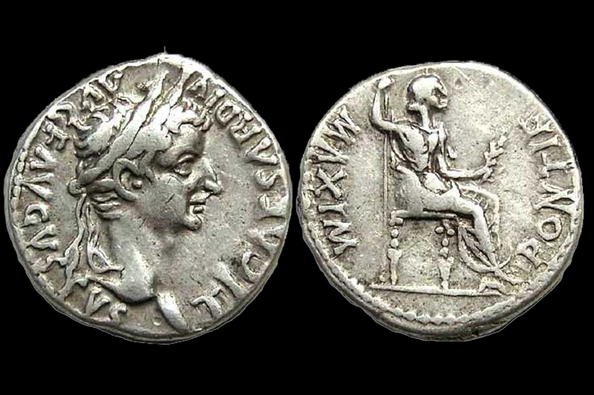
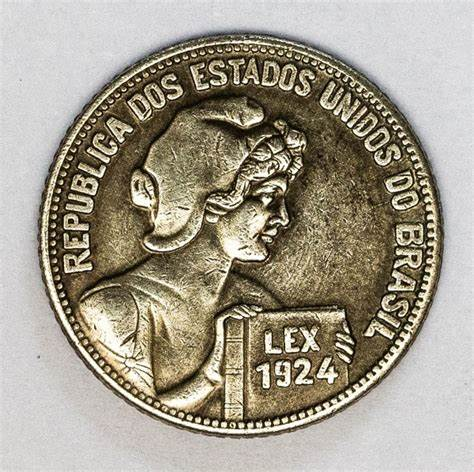
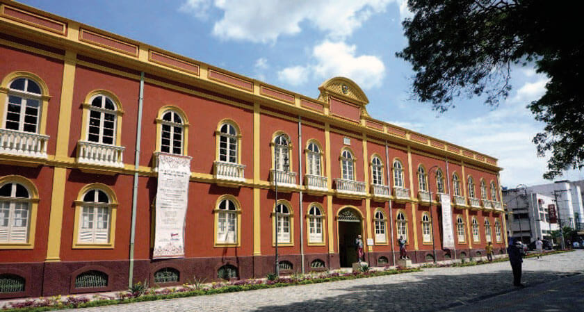
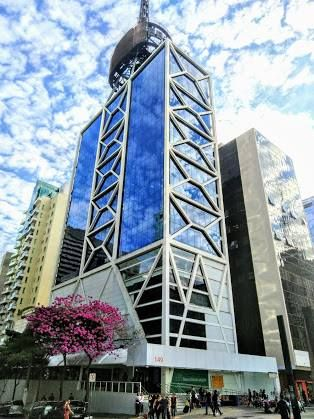
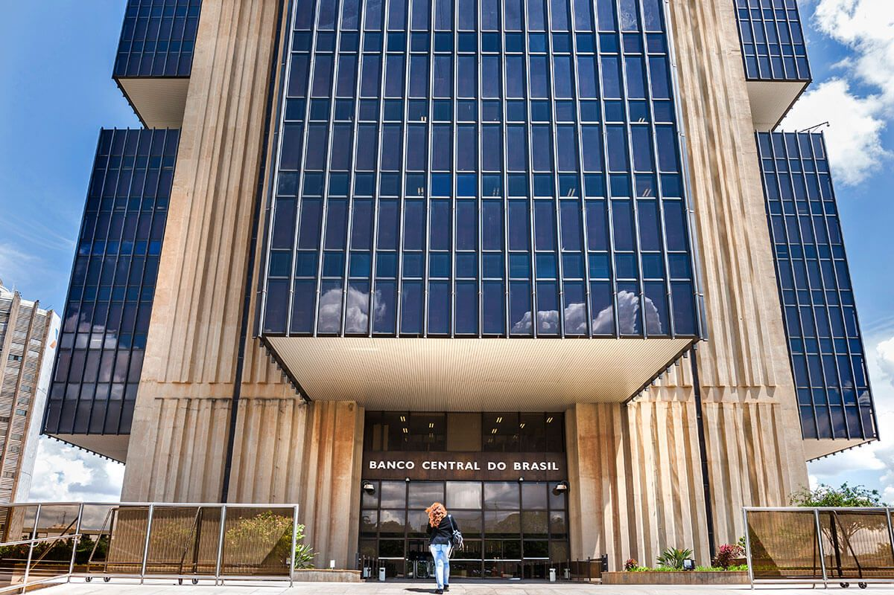

Desde o Império Romano a aristocracia cultivou o interesse de colecionar moedas, sem no entanto estudá-las. O costume romano compartilhado por imperadores, como Augusto, foi mantido por reis europeus durante a Idade Média. A coleção de reis como Luís XIV da França e Maximiliano do Sacro Império possibilitariam o surgimento da numismática durante o Renascimento, graças à vontade dos humanistas em recuperar a cultura greco-romana, e a iniciativa de organizar as coleções reais. Assim a numismática surgiu durante o renascimento e se consolidou como ciência nos séculos seguintes.
Seja pela cultura, pela observância de técnicas ou simplesmente pelo desafio de colecionar, a relação entre cultura e numismática sempre é presente. Mesmo aqueles que colecionam moedas ou cédulas como um simples hobby, sem se dedicar à pesquisa, adquirem uma boa bagagem de cultura geral.
Há uma série de curiosidades que os numismatas cultivam. Por exemplo, a serrilha das moedas surgiu porque era frequente, antes disso, raspar a borda das moedas de metais mais nobres (ouro e prata) para juntar esse mesmo metal em pó, diminuindo o diâmetro da moeda e o seu valor no peso (mas não o valor facial) - na gíria numismática este acto de subtrair metal original á moeda é chamada de cerceio. Outro exemplo, embora não de interesse direto para a numismática, é a quantidade de objectos que já serviram de moeda em diferentes culturas: das conchas e seixos até animais como elefantes ou o couro de outros. Ainda hoje, em vários países do Oriente as moedas são perfuradas para nelas serem enfiados cordões.
A numismática desenvolveu-se no Brasil, principalmente a partir do século XIX, seguindo em parte o modelo europeu.
A aristocracia teve papel fundamental para o desenvolvimento da numismática no Brasil, por ser a classe mais instruída e também por ter condições de formar coleções numismáticas, lembrando-se que na época as coleções deviam se formar basicamente de moedas greco-romanas. Temos também a contribuição especial do imperador Dom Pedro II, amante das artes e da história e que frequentemente fazia viagens ao exterior donde trazia “lembranças”.
Com o fim do Império, a maior parte da produção numismática brasileira ficou restrita a museus e a trabalhos realizados por poucos pesquisadores principalmente no eixo das cidades do Rio de Janeiro e de São Paulo, quadro que começou a se alterar com a popularização das feiras de antiguidade e com a criação de sociedades numismáticas no país.
Neste contexto, algumas personagens se destacam por sua contribuição à ciência numismática nacional. O personagem mais importante, ainda hoje considerado o verdadeiro criador da nossa numismática é Julius Meili. Sua obra estaria, inicialmente, dividida em quatro tomos, sendo o último dedicado às medalhas brasileiras. Dos três volumes concluídos, o primeiro, As Moedas do Brasil Colônia, foi publicado em 1897. Alguns anos mais tarde surge o catálogo Souza Lobo, engrandecendo a ainda escassa fonte de consulta a respeito da nossa história numária.
Com o passar dos anos, cresceu notavelmente o número de numismatas e, consequentemente, os acervos compostos de belos e raros exemplares. Foi na década de 1940 que começaram a surgir os primeiros trabalhos do numismata, estudioso e pesquisador, Kurt Prober, com destaque para o seu Manual de Numismática de 1944 e o Catálogo de Moedas Brasileiras de Prata de 1947.
Apesar dos esforços a numismática no Brasil não é tão bem difundida como em outros países. Ainda assim, possui vários grupos de colecionadores bem organizados, cursos e literatura sobre sua evolução no país.
O Museu mais Antigo do Brasil de 1900 é o Museu de Numismática Bernardo Ramos em Manaus, Amazonas e tem a sua origem na coleção de moedas, medalhas, cédulas e documentos históricos, organizada pelo comerciante amazonense Bernardo Ramos. Estudioso e fascinado pela Numismática, viajou por vários países, adquirindo peças para sua coleção. Em 1898, adquiriu a valiosa coleção e respectiva biblioteca especializada do humanista pernambucano Cícero Peregrino Dias.
O Governo do Amazonas autorizou a compra da coleção numismática de Bernardo Ramos, em 20 de Fevereiro de 1900, pela quantia de trezentos contos de réis.
Em 1900, por ocasião das festividades do IV Centenário do Descobrimento do Brasil, realizadas no Rio de Janeiro, então capital da República, a Coleção Numismática foi exposta no período de 05 a 31 de maio de 1900, no salão nobre do Externato do Ginásio Nacional, hoje Museu Nacional. A exposição ao ser visitada pelo então Presidente da República Dr. Campos Salles, despertou neste um grande interesse, levando-o a fazer uma oferta de compra, o que foi recusado pelo Amazonense.
Em 30 de novembro de 1900, o Decreto n.º 0460 criou a Seção Numismática e o Regulamento, que deu origem legal ao Museu. A coleção foi dividida em 24 vitrines de madeira de lei com cristal bisotado, e aberta à visitação. Desde 25 de março de 2009, o Museu retornou ao antigo prédio do Comando Geral da Policia Militar, atual Palacete Provincial. O acervo que em 1900, era considerado o primeiro da América Latina e o quarto do mundo, atualmente está entre um dos melhores do mundo em sua especialidade.
O Museu Herculano Pires foi um museu mantido pela Itaú Numismática de 2000 a 2009,[9] quando reunia então um dos maiores acervos de moedas, medalhas e condecorações luso-brasileiras, com mais de 6.500 peças. Dessas, cerca de 1 500 estão expostas, divididas em 32 módulos e organizadas cronologicamente.
As principais atrações são a Peça da Coroação de D. Pedro I, a Ordem da Rosa, Moedas Obsidionais Holandesas e Dobrões, além de uma mesa circular com 256 moedas do século XIX que permite observação detalhada com lentes que aumentam o objeto 40 vezes.
O Museu de Valores do Banco Central é um museu brasileiro, com sede em Brasília, no Distrito Federal e sala de exposição na gerência-regional Curitiba. Seu acervo é composto de cédulas, moedas e outros valores impressos, barras de ouro, medalhas e curiosidades numismáticas ligadas ao dinheiro e a tecnologia de sua fabricação.
]Inaugurado no dia 31 de agosto de 1972, como parte dos eventos comemorativos dos 150 anos da Independência do Brasil, no Palacete da antiga Caixa de Amortização. Com a transferência do Banco Central do Brasil para Brasília, o Museu de Valores recebeu novas instalações no edifício sede do Banco Central, em 8 de setembro de 1981.
O Museu de Valores possui uma coleção de moedas e cédulas brasileiras, com peças representativas de todos os períodos da história do país. Esta coleção inclui exemplares de extrema raridade, como é o caso da chamada "Peça da Coroação", da qual restam apenas 64 moedas, para comemorar a coroação de D. Pedro I como imperador do Brasil, em 1822.
Por fim, o Banco Central do Brasil é o órgão responsável pela reserva-ouro brasileira. Em razão disso o Museu tem condições de expor ao público exemplares de barras de ouro, pepitas e outras curiosidades que mostram a beleza, a raridade e a utilidade desse metal precioso que sempre provocou fascinação no ser humano. Em destaque, pode-se ver a maior pepita de ouro já encontrada no Brasil: pesa 60,820 kg (52,332 kg de ouro contido) e foi encontrada no garimpo de Serra Pelada, no Estado do Pará.
